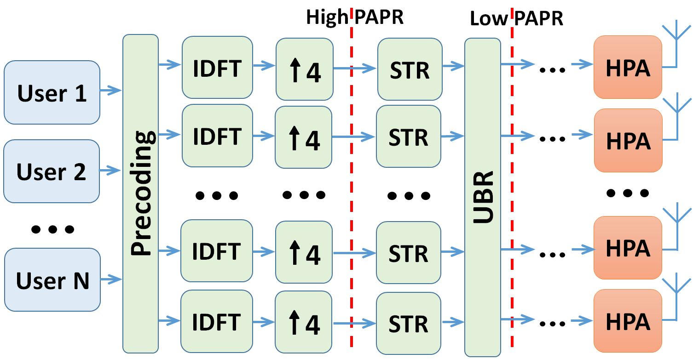
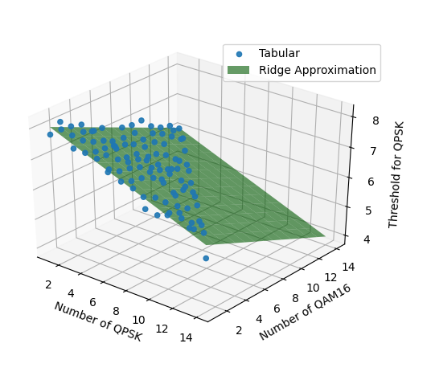
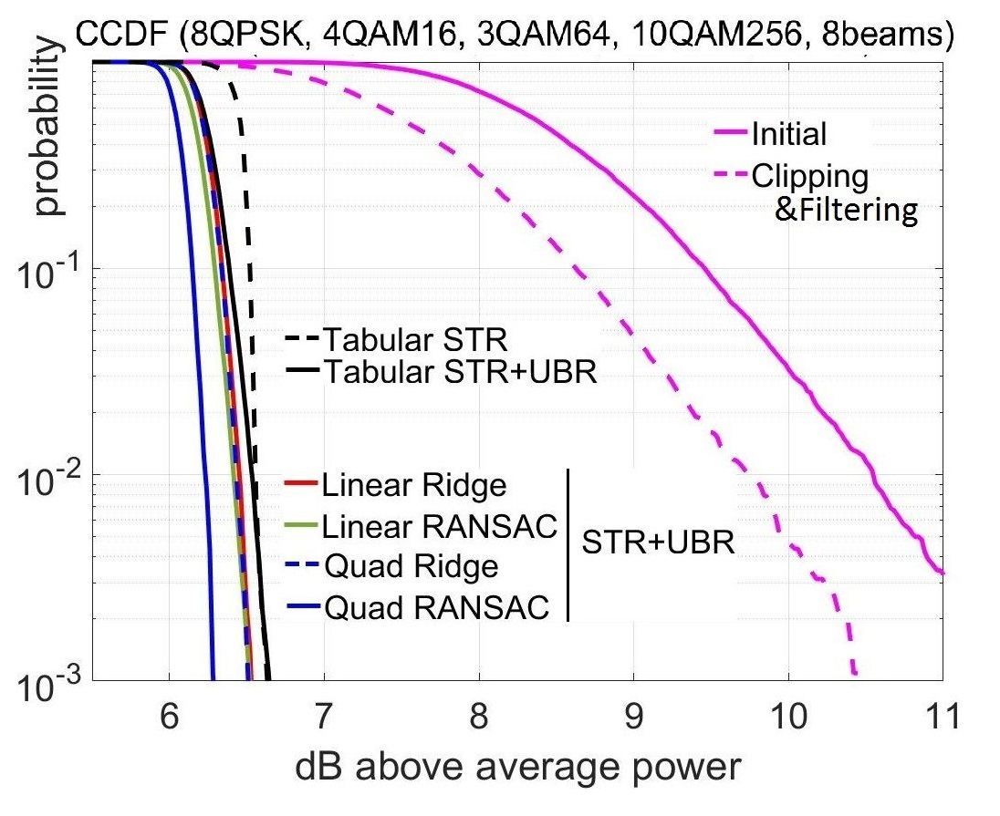
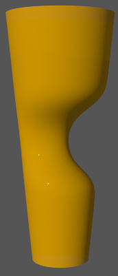
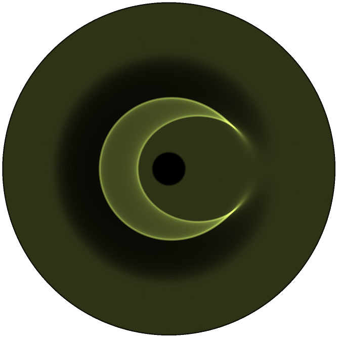
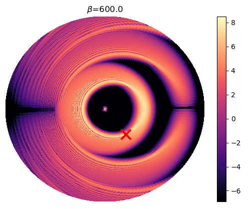
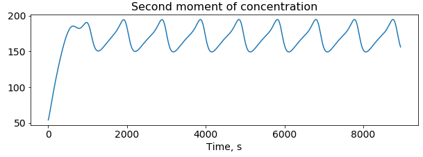
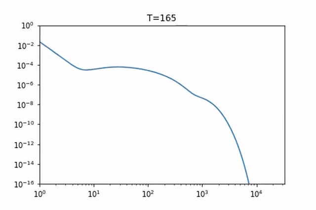
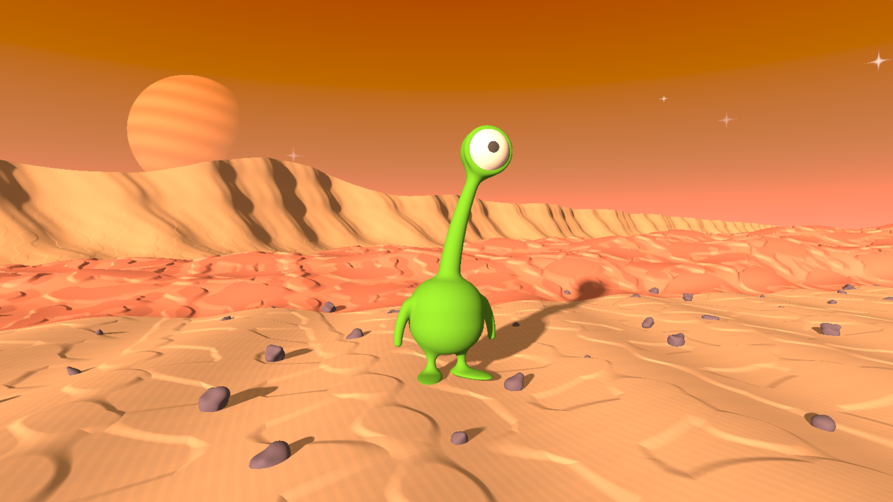

Current work
-
Machine Learning-Assisted PAPR Reduction in Massive MIMO
Aleksei Kalinov, Roman Bychkov, Andrey Ivanov, Alexander Osinsky, Dmitry YarotskyIEEE Wireless Communications Letters  We propose to substitute a huge table of parameters for peak-to-average power ratio reduction algorithms with a simple low-parametric and computationally-efficient machine learning model, gaining nearly 4 orders of magnitude reduction in space with a cost of additional 16 multiplications and 20 additions.
Paper -
Distributed Numerical Modelling of Higher-Dimensional Caustics in Compton Scattering
Aleksei Kalinov, V. Yu. Kharin, S. G. RykovanovPoster presented at: IX Conference for Young Researchers "Elementary Particle Physics and Cosmology"  - Developing a fully-differentiable numerical model to obtain high-intensity narrow-band scattering radiation via laser pulse phase optimization. [4]
- Visualizing emerging caustics [5] in phase-angle domain and the corresponding refracting media.
-
Particle Aggregation and Fragmentation Simulation with Smoluchowskii Equations
 - Exploring new preconditioning schemes for non-stable stationary solutions [1], [2] of Smoluchowskii equations.
- Theoretical and practical algorithmic improvements of Monte-Carlo algorithms [3] for specific setup of fragmentation problems.
-
"We're not alone" Shader
A cute creature on a distant planet pondering over the existence of life in the universe.
Shadertoy
Every part of the shader, including procedurally generated terrain and the sky is modelled using signed field distance technique [reference] directly in a pixel shader.